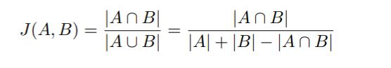
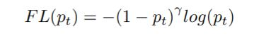
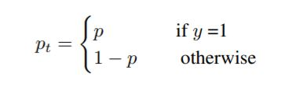

Problem Definition
Our project will use computer vision for segmenting building footprints from aerial imagery. The data consists of images taken by a drone from 10 different regions across Africa and has been provided through the Open Cities AI Challenge. Our goal is to classify the presence or absence of a building on a pixel-by-pixel basis.
Motivation
With the significant paradigm shift in the construction industry and advancement in construction technology, the typical construction timeline has decreased drastically. One challenge for cities is managing the risk of disasters in a constantly changing environment. Buildings, roads, and other critical infrastructure need to be mapped frequently and accurately to represent assets important to every community. Hence, the key to disaster risk management (DRM) is knowing the location of the resources vulnerable to damage or disruption by natural hazards.
Related Work
There is a large amount of literature on semantic segmentation. O Ronneberger et al. architectured a convolutional neural network (CNN) for medical image segmentation that consists of contracting and expanding paths. [7]. The main difference in the architecture is the concatenation of the contractive path feature maps to the corresponding expansion path layer. The model achieves good performance even on very few annotated images.
Alex Kendall, Vijay Badrinarayana and Roberto Cipolla proposed SegNet[3], a CNN for multi-class pixel-wise segmentation. The model architecture consists of encoder, decoder and a pixel-wise classifier. SegNet achieves great performance in terms of memory and time during inference.
In 2018, Zongwei Zhou et. al redesigned the skip pathways in U-Net architecture to reduce the semantic gap between the encoder and the decoder, and provided reasoning for this design. U-Net++ has shown to perform better than U-Net across multiple medical segmentation tasks.
Researchers from ETH Zurich studied the trade-off between pixel accuracy and readily available but less accurate reference data for image segmentation by using online map data from OpenStreetMap (OSM) to automatically obtain weakly labeled training data for three classes, namely buildings, roads, and background (everything other than buildings and roads).[5]. They use deep learning techniques, which they purport as data hungry and robust to label noise.
Sebastien Ohleyer [6] performed segmentation on aerial image datasets using a Mask R-CNN and compared its performance to baseline results obtained with two more classical networks: a Fully Convolutional Network (FCN) and its extension using a Multi-Layer Perceptron (MLP). It was found that Mask R-CNN achieves better perfomance than MLP and FCN but needed a lot of hyperparameter tuning to predict well on very dense cities, ie. where the buildings were really close.
Our work deals with the segmentation of remotely sensed images provided by OpenAI using the existing deep learning models like U-Net.
Dataset
The data collected using OpenStreetMap (OSM) is stored in the form of SpatioTemporal Asset Catalogs (STACs). A STAC is a standardized specification that allows easy query of geospatial imagery and labels. Precisely, the images in the dataset are stored as large Cloud Optimized GeoTiffs (COG) and the building footprints are stored in GeoJSON format (GeoJSON). A series of JSON files that comprise a STAC reference each other as well as the geospatial assets (e.g. imagery, labels). The data is divided into training data and test data, as explained further.
Training data
We have used Tier 1 of the dataset given by the Open Cities AI Challenge for training the building segmentation model. The data is divided into training and validation sets from different drone images (in cloud-optimized GeoTIFF format) and its accompanying ground-truth labels of manually traced building outlines (in GeoJSON format). The below table depicts a summary of the training data.
| City | Scene Count | Building Count |
|---|---|---|
| Accra | 4 | 33585 |
| Dar es Salaam | 6 | 1231171 |
| Kampala | 1 | 4056 |
| Montepuez | 4 | 6947 |
| Niamey | 1 | 634 |
| Pointe-Noire | 2 | 8731 |
| Zanzibar | 13 | 13407 |
Test data
The test set consists of 11,481 1024 x 1024 pixel CloudOptimized GeoTIFF ”chips” derived from myriad of scenes. These scenes are mutually exclusive of the training set. Some of the test scenes are from regions that are present in the training set while others are not.
Methodology
Data preprocessing
Data visualization before preprocessing
The dataset is in the form of different folders, each named after different African cities. Each such folder in turn contains a specific number of ’scene’ sub-folders and their corresponding ’label’ subfolders. For further steps, each ’scene’ sub-folder and its corresponding label sub-folder are considered as a pair. A few of the ’scene’ and their corresponding ’label’ images were visualized for better understanding of the structure of the given data, as shown in the images below.
Creation of masks for the tiles
In this step, the mask for each tile was created by cropping and using the solaris package. The 3-channel mask has building footprint as the first channel, the boundary as the second and a 0- initialised third channel.
Division of images into tiles
In this step, the python package ’supermercado’ was used to generate square polygons representing the slippy map tiles (a term referring to modern web maps that allows zooming and panning around) out of the ’scene’ and ’label’ images. Slippy map tiles of tile size=256 and zoom level=19 were generated, which yields a manageable number of tiles and satisfactory segmentation results without much preprocessing or model training time. Then, a GeoDataFrame that consists of all the supermercado-generated slippy map tile polygons was generated using the Python library, ’geopandas’. Finally, all the tiles( created for all the cities and its corresponding labels) were merged into a single folder for training the building segmentation model.
Division of tiles into training and validation sets
To improve the prediction efficiency of the building segmentation model, the given dataset was divided into training and validation sets in the ratio of 75:25.
Visualization of the preprocessed data
Few of the training set tiles were visualised to view the preprocessed data, as shown in the figure below. Then, the images and masks were saved in images and masks folder respectively
Label Image example

Pre-processed Data Tile (Left: Image Tile, Right: Label Tile)
Training
Setting up the data
The training dataset of tile images and masks created in the data pre-processing step was set up to load correctly into fastai for training and validation. With the fastai library,image segmentation models could be built with a few lines of code using the classes and methods provided. Transformations were added to the images and a databunch was created from the resulting augmented data to be used by the model learner.
Define custom losses and metrics
Two loss functions that show high performance for image segmentation tasks, namely Jaccard Loss and Focal Loss were implemented. These loss functions were then combined and calculated across the 3 channels with adjustable weighting. In considering the image-wide context with adjustable weighing of the 3 target mask channels, the approach of combining a Jaccard loss with individual pixel-focused Binary Cross Entropy or Focal loss has been shown to consistently exceed the performance of single loss functions. Finally, our model evaluation metrics (accuracy and Jaccard score) were adapted to calculate a mean score for all the channels or by a specified individual channel.
Building the U-Net Model
A U-Net is a convolutional neural network that consists of two paths, namely the contraction path (the encoder) and the expansion path (the decoder), as shown in Figure 7. The encoder extracts features of 3 the image using convolutional and pooling layers. During the process of encoding, the size of the feature map gets reduced. The decoder then uses Upconvolution layers to recover the size of the feature map for segmentation of the image. Since the decoding process loses some of the higher level features learned by the encoder, the skip connections of the U-Net passes the outputs of the encoding layers directly to the decoding layers so that all the important pieces of information can be preserved [8]. The fastai library was used to create and train our U-Net model with the U-Net learner class. The data along with the ImageNet pretrained encodernetwork (Resnet34), our accuracy function as well as a weight-decay of 0.01 was passed. Then, using the fastai function, an appropriate learning rate was found and the model training was started. First, we fine-tuned only the decoder part of the U-Net leaving the weights for the resnet34 encoder frozen for some epochs. Then, we unfroze all the trainable weights/layers of our model and trained for some more epochs. We also tracked the loss function metrics per epoch as training progressed to make sure the model continued to improve and did not over-fit the training data. Further, we generated some batches of predictions on the validation set, calculated and reshaped the image-wise loss values, and sorted them by highest loss first to see the worst performing results.
U-Net Architecture

Model Training Output for Decoder Only
Model Training Output for Decoder and Encoder
Model Prediction Example for Decoder and Encoder
Model Prediction Example for Decoder Only
Testing and Evaluation
The quantitative evaluation of our prediction model is
being done using the Jaccard loss and Focal loss. We have
also evaluated the combined loss term as mentioned in the
training steps.
The Jaccard Index is a statistical measure of similarity
between two label sets, and is defined as the intersection
divided by the union of the two sets. A higher value of the
Jaccard index depicts a higher accuracy of the prediction
model. The Jaccard index can be calculated as follows:

where A is the set of true labels and B is the set of predicted
labels.
The Focal Loss is designed to address the one-stage object detection scenario in which there is an extreme
imbalance between foreground and background classes during
training (e.g., 1:1000). The focal loss is defined as follows:


In the above y = 1 specifies the ground-truth class and p ∈
[0, 1] is the model’s estimated probability for the class with
label y = 1.
Results
The final results of our prediction model will be in the
form of an image representing the building footprint mask.
The building footprint mask for each image tile in the
test set would consist of TRUE (denoting the existence of
building footprint) and FALSE (denoting the absence of a
building) pixel values.
The current results are as shown in Figure 8 and Figure 9.
Figure 8 corresponds to the output after the training of the
decoder alone where the encoder was frozen while Figure
9 corresponds to the output after training both the encoder
and the decoder. The training loss and validation loss at
the final epoch for the decoder-only training are 0.642712
and 0.629103, respectively and the corresponding losses for
both the encoder and decoder training are 0.587440 and
0.585151, respectively.
Challenges
The main challenges we faced were around data handling prior to model training and inference. Handling and understanding the aerial images and file formats were timeconsuming. Since the python packages used to handle the TIFFs and GeoJSONs are highly specialized to that domain, they were new to us and took time to explore. The main challenges we faced were around data handling prior to model training and inference. Handling and understanding the aerial images and file formats were timeconsuming. Since the python packages used to handle the TIFFs and GeoJSONs are highly specialized to that domain, they were new to us and took time to explore.
References
- How to segment building on drone imagery with fast.ai & cloud-native geodata tools. shorturl.at/dnxUY.
- Open cities ai challenge: Segmenting buildings for disaster resilience, 2020. https: //www.drivendata.org/competitions/60/ building-segmentation-disaster-resilience/ page/150/.
- Vijay Badrinarayanan, Alex Kendall, and Roberto Cipolla. SegNet: A Deep Convolutional Encoder-Decoder Architecture for Image Segmentation. IEEE Transactions on Pattern Analysis and Machine Intelligence, 39(12):2481–2495, Dec. 2017.
- Vincent Fung. An Overview of ResNet and its Variants, July 2017.
- Pascal Kaiser, Jan Dirk Wegner, Aurelien Lucchi, Martin ´ Jaggi, Thomas Hofmann, and Konrad Schindler. Learning Aerial Image Segmentation From Online Maps. IEEE Transactions on Geoscience and Remote Sensing, 55(11):6054– 6068, Nov. 2017.
- Sebastien Ohleyer and ENS Paris-Saclay. Building segmentation on satellite images. page 5.
- Olaf Ronneberger, Philipp Fischer, and Thomas Brox. UNet: Convolutional Networks for Biomedical Image Segmentation. In Nassir Navab, Joachim Hornegger, William M. Wells, and Alejandro F. Frangi, editors, Medical Image Computing and Computer-Assisted Intervention – MICCAI 2015, Lecture Notes in Computer Science, pages 234–241, Cham, 2015. Springer International Publishing.
- Gilbert Tanner. Fastai image segmentation, 2019. https://gilberttanner.com/blog/ fastai-image-segmentation.